A bathroom wall isn't like any other wall in the house.
Humidity, water exposure, and limited ventilation all affect what actually survives hanging there long-term.
These 15 ideas cover the decor itself, but just as importantly, what it actually takes to install each one safely.
Skip that part, and a nice idea turns into a warped print or a rusted frame within a year.

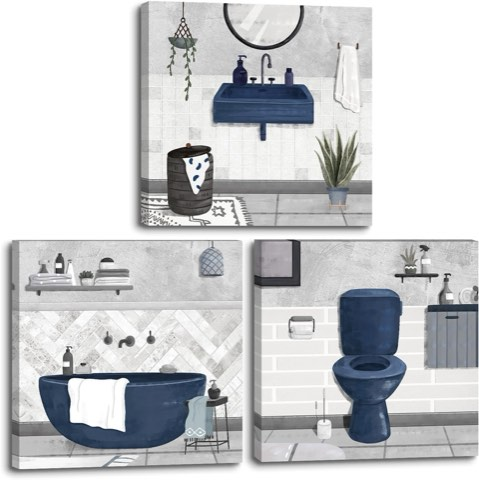
ARTINME Set of 3 Framed Bathroom Wall Art, Bath Tub Paintings, Ready to Hang 12x12
Shop on Amazon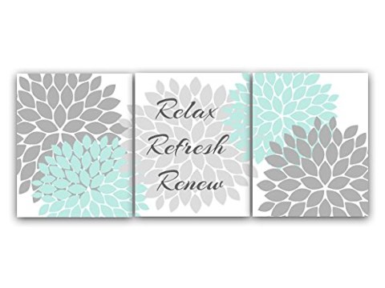
Gray and Aqua Bathroom Décor Wall Art, Relax Refresh Renew, Modern Bathroom Art
Shop on AmazonThe Mistakes Worth Avoiding First
Hanging anything with a wood frame or canvas backing directly in a high-moisture zone, like right beside the shower, risks warping within months.
Standard adhesive hooks and fasteners often fail faster in a humid bathroom than they would anywhere else in the house.
Overcrowding a small bathroom wall creates visual clutter faster than it would in a larger room with more space to absorb it.
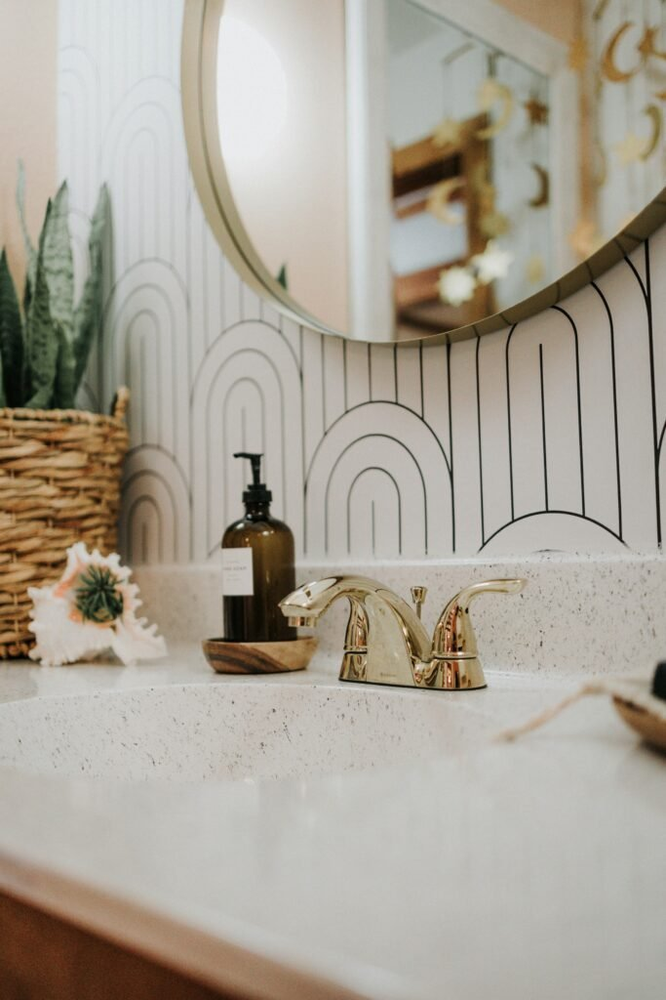
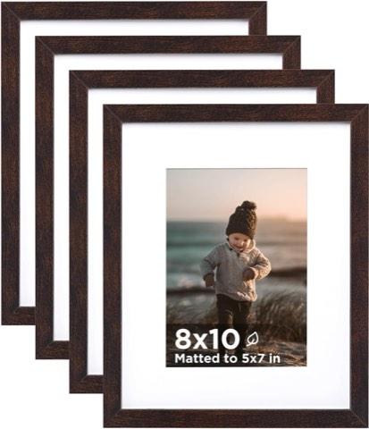
KINLINK 8x10 Picture Frames, Brown, Set of 4, Composite Wood with Real Glass
Shop on AmazonWhy the Wall Matters More Than It Gets Credit For
A bathroom's walls take up more visual space than almost any other surface in the room, yet they're often the last thing styled.
Blank walls make an otherwise well-designed bathroom feel unfinished, the same way an empty living room wall would.
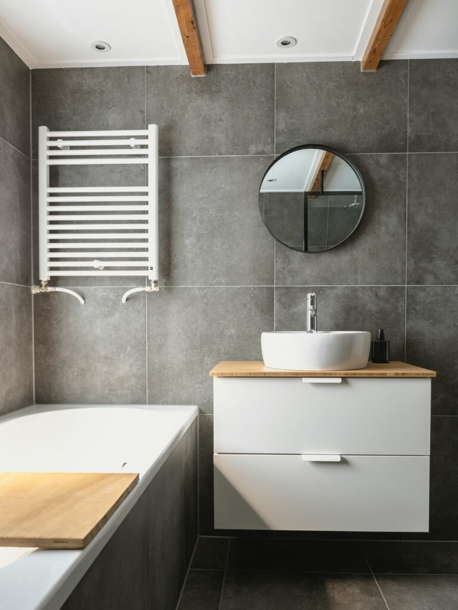
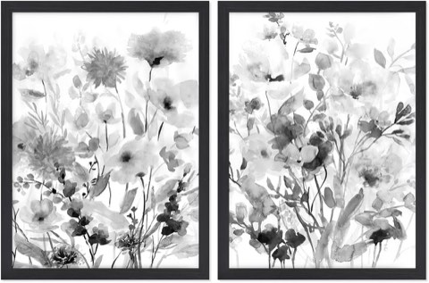
Botanical Canvas Prints Wall Art Black & White Wildflower Pictures Rustic Floral Paintings
Shop on Amazon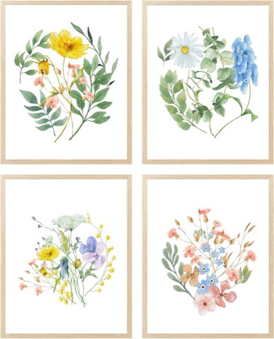
Botanical Wall Framed Art Set of 4, Simple Flower Plants Posters Wall Decor Minimalist
Shop on AmazonA bathroom's humidity and limited airflow make it a genuinely different installation environment than a bedroom or living room wall.
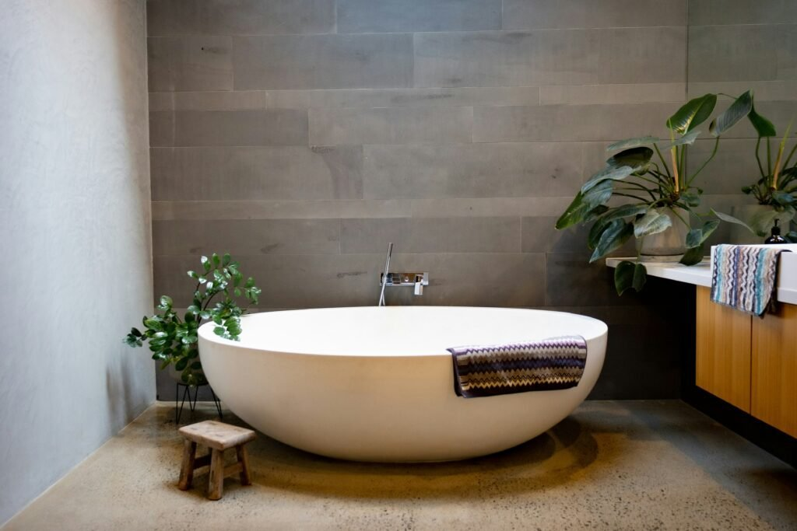
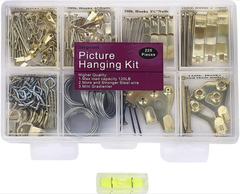
Picture Hangers, Picture Hanging Kit, 225pcs Heavy Duty Frame Hooks Hardware with Nails
Shop on Amazon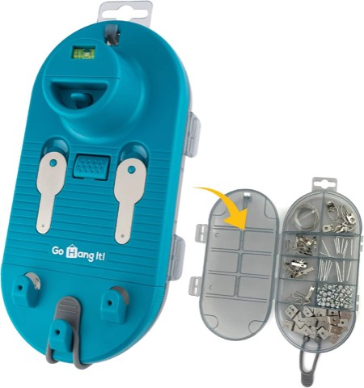
Original Go Hang It!® Pro All-in-One Picture Hanging Kit, Level & Hardware
Shop on Amazon1. Add Personalized Wall Elements
A family photo in a sealed frame, a meaningful small object, or a custom piece all make the room feel specific rather than generic.
The same moisture considerations from framed art apply here. Protect anything personal and irreplaceable with proper sealing and placement.
A single personal touch does more than several generic decorative pieces combined.
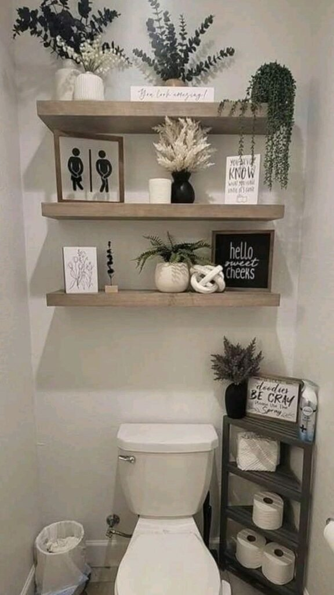
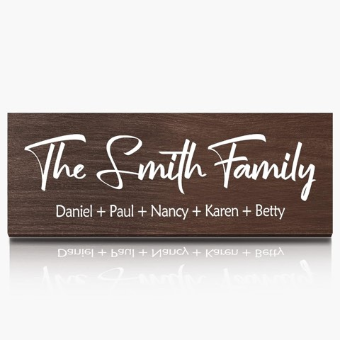
Personalized Family Name Wood Sign, Custom Last Name Plaque, New Family Established Sign
Shop on Amazon2. Try LED Wall Lighting as Decor
A wall-mounted LED fixture does double duty as both lighting and a decorative element.
Checking for a damp or wet rating matters more for this idea than almost any other on this list, since it's an electrical installation in a humid room.
This pairs naturally with vanity lighting elsewhere in the bathroom.
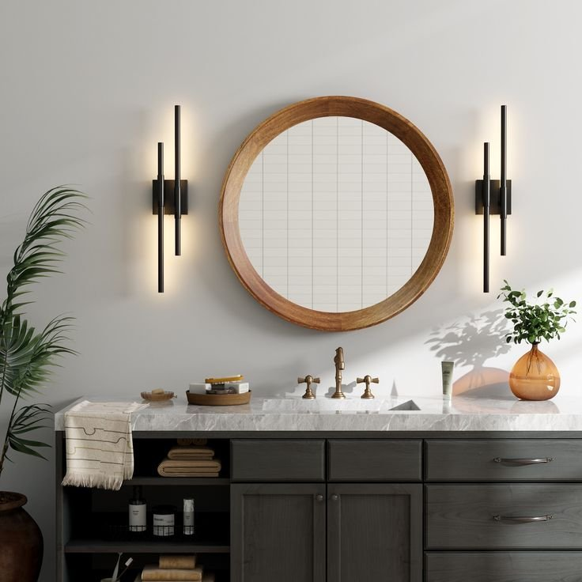
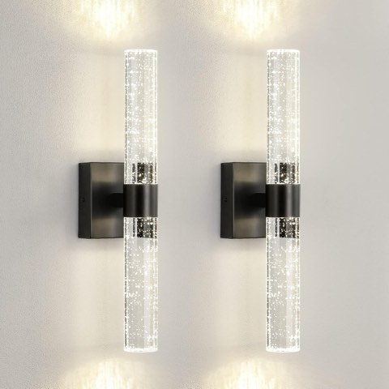
CCYCOL Black Modern LED Wall Sconces, Set of Two, 18 Inch, 4000K Dimmable
Shop on Amazon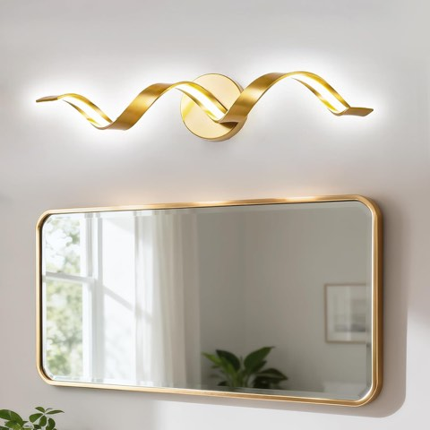
Spiral LED Bathroom Vanity Light Fixture, Contemporary Curved Wall Sconce with Acrylic
Shop on Amazon3. Add a Minimal Wall Clock
A simple clock adds genuine function to a wall that might otherwise stay purely decorative.
This works well paired with a more minimalist overall bathroom style, where few other wall elements compete for attention.
Metal or plastic construction holds up better than a wood-cased clock in a humid room.
4. Bring in Woven Wall Decor
A macrame or woven wall hanging adds texture in a way flat art can't.
Natural fiber materials handle moderate humidity reasonably well, though direct shower spray will shorten their lifespan.
This suits a boho or textured bathroom aesthetic especially well.
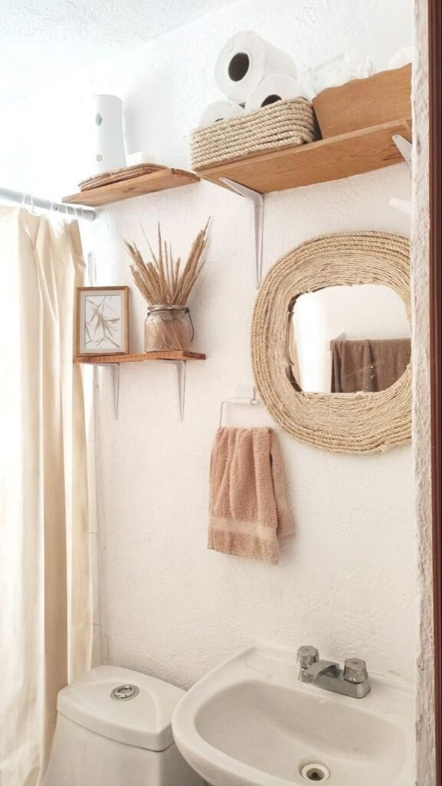
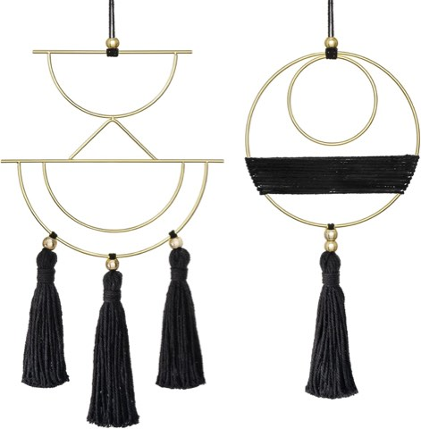
Mkono 2 Pcs Small Macrame Wall Hanging, Boho Decor with Gold Metal Ring
Shop on Amazon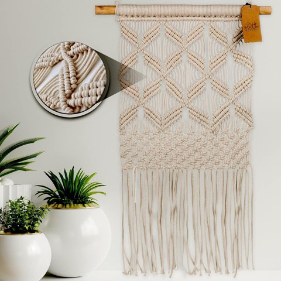
Gentle Crafts Boho Macrame Hanging Wall Decor, Woven Cotton Rope Tapestry
Shop on Amazon5. Build a Styled Wall Niche
A built-in niche, if the wall structure allows for it, combines storage and display in one clean feature.
This requires real construction, unlike most other ideas on this list, so it's best planned alongside a larger renovation.
Keeping what's displayed inside minimal and curated matters more here than filling every inch of the space.
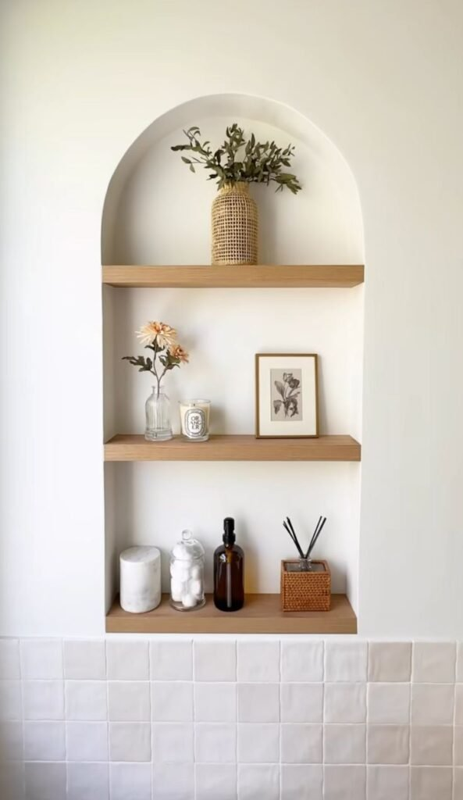
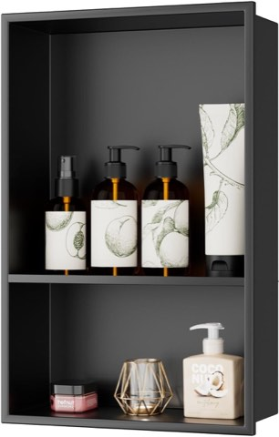
Ralbay No Tile Needed Shower Niche, 12" x 18" Black Recessed Wall Niche
Shop on Amazon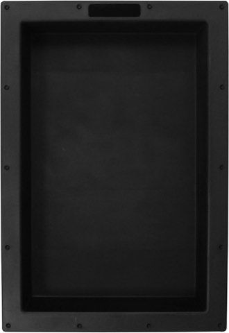
eModernDecor Shower Cube Recessed Shower Niche Organizer, 25" x 17", Black
Shop on Amazon6. Paint an Accent Wall
A bold color on just one wall is one of the lowest-risk, highest-impact ideas on this entire list.
A bathroom-specific paint, formulated to resist moisture and mildew, matters more here than the color choice itself.
Proper ventilation during and after painting helps the finish cure properly in a humid room.
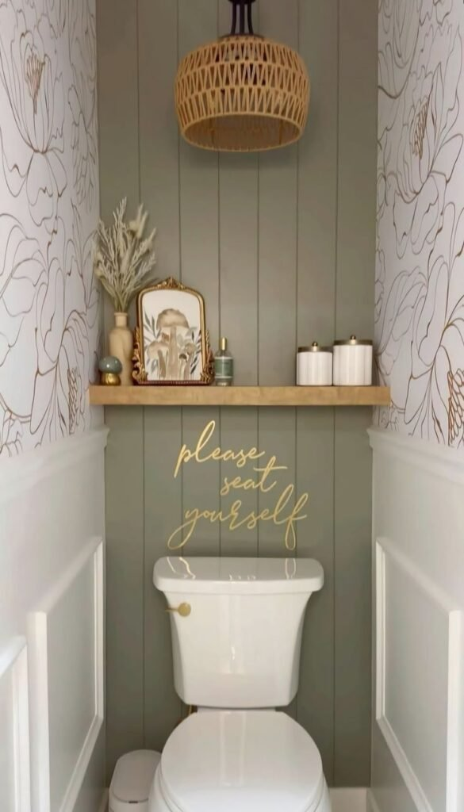

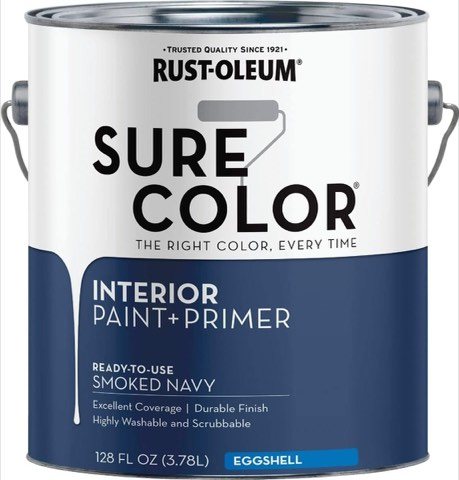
Rust-Oleum Simply Home Interior Wall Paint 332145, Eggshell Smoked Navy, 1 Gallon
Shop on Amazon7. Hang Vintage Signs and Typography Art
A metal or sealed vintage-style sign brings personality and tends to hold up well to bathroom humidity, given the material's natural durability.
This works especially well in a farmhouse or eclectic-leaning bathroom.
Checking for any rust-prone hardware before hanging saves a future headache in a humid room.
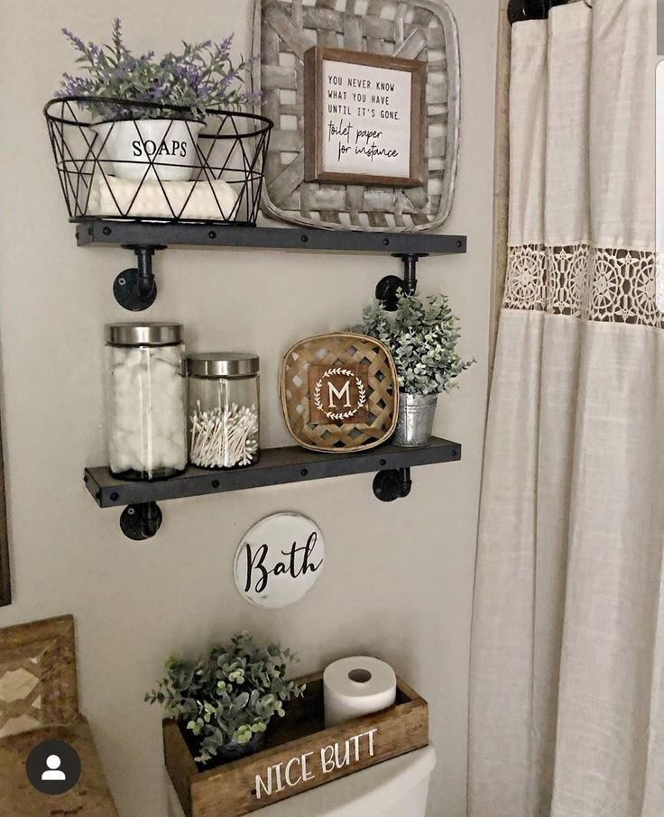
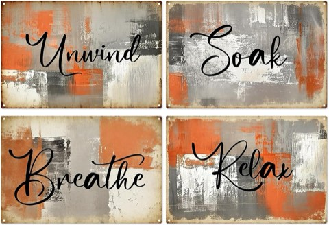
Bathroom Metal Tin Signs, Soak Relax Unwind Breathe Rustic Spa Wall Decor
Shop on Amazon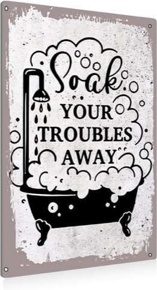
BEASTZHENG Vintage Soak Your Troubles Away Sign Bathroom Metal Tin Sign Wall Decor
Shop on Amazon8. Add Sculptural Wall Decor
A textured or dimensional wall piece adds depth that flat art can't replicate.
Material choice matters even more here than with flat art, since a 3D piece has more surface area exposed to humidity.
Ceramic, metal, or sealed wood all hold up better than an untreated or porous material.
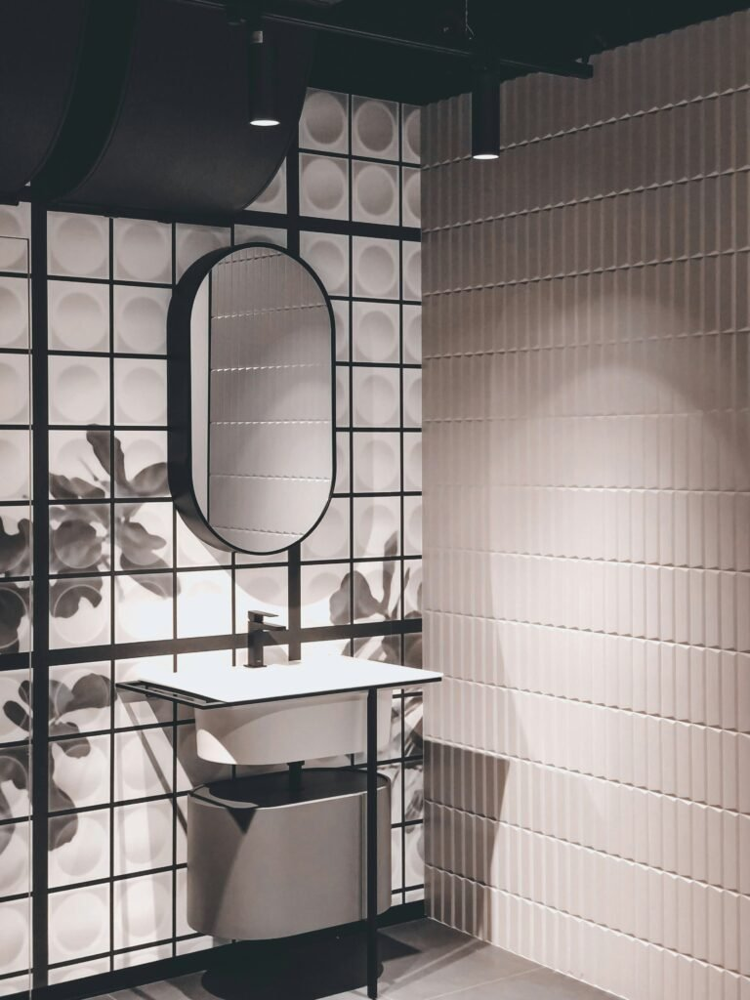
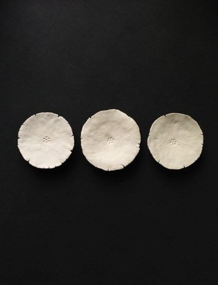
3D Ceramic Wall Art, Three Graces Porcelain Wall Sculpture in White Pottery
Shop on Amazon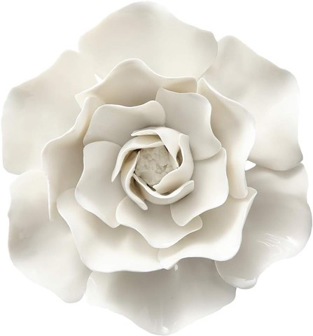
ALYCASO Ceramic Flower Wall Décor Artificial 3D Flower Wall Art for Living Room Home
Shop on Amazon9. Build a Gallery Wall
A collection of smaller framed pieces works the same way it would anywhere else in the home, with the same moisture considerations as single framed art.
Keeping the gallery wall in the driest part of the bathroom protects the investment in multiple frames at once.
A consistent frame style or color across the collection keeps it from reading as chaotic.
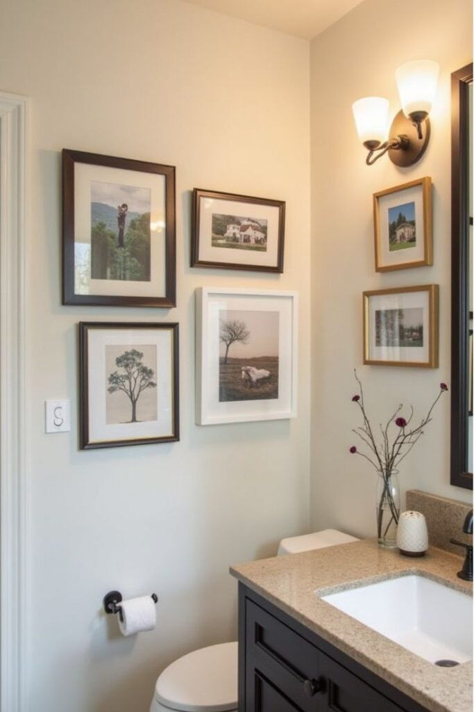
10. Style Your Towel Display
A styled towel hook or bar arrangement turns a purely functional object into part of the room's decor.
Rolled towels on an open shelf or a ladder-style rack both read as more intentional than a single flat hook.
This idea doubles as function, which makes it one of the more practical choices on this entire list.
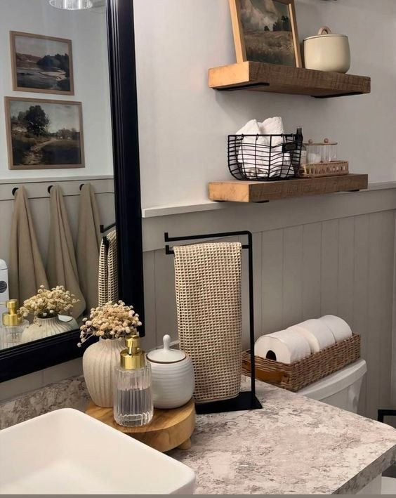
11. Mount a Wall Planter
A planter mounted directly on the wall adds greenery without taking up any counter or floor space.
Choosing a humidity-loving plant matters more here than the planter itself. Most houseplants won't thrive in a steamy bathroom environment.
Drainage matters too, since a wall-mounted planter without it risks water damage to whatever's behind it.
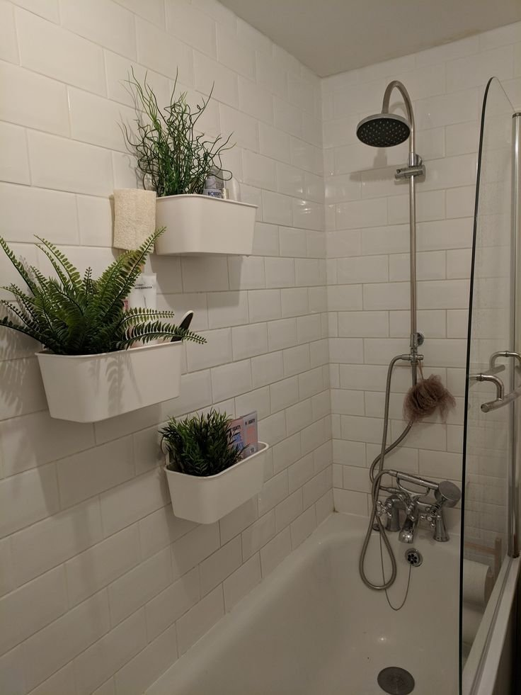
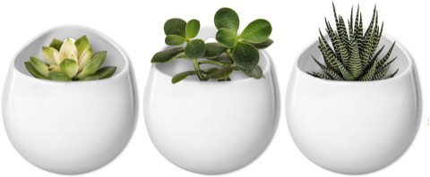
Mkono Ceramic Wall Planter for Indoor Plants 4 Inch Hanging Pot, Set of 3
Shop on Amazon12. Add a Mirror Beyond the Vanity
A second mirror, placed somewhere other than directly above the sink, adds both function and visual interest.
Look specifically for moisture-resistant backing on any mirror installed in a bathroom, since standard mirror backing can corrode over time in a humid environment.
This placement also helps bounce extra light into a smaller or darker bathroom.
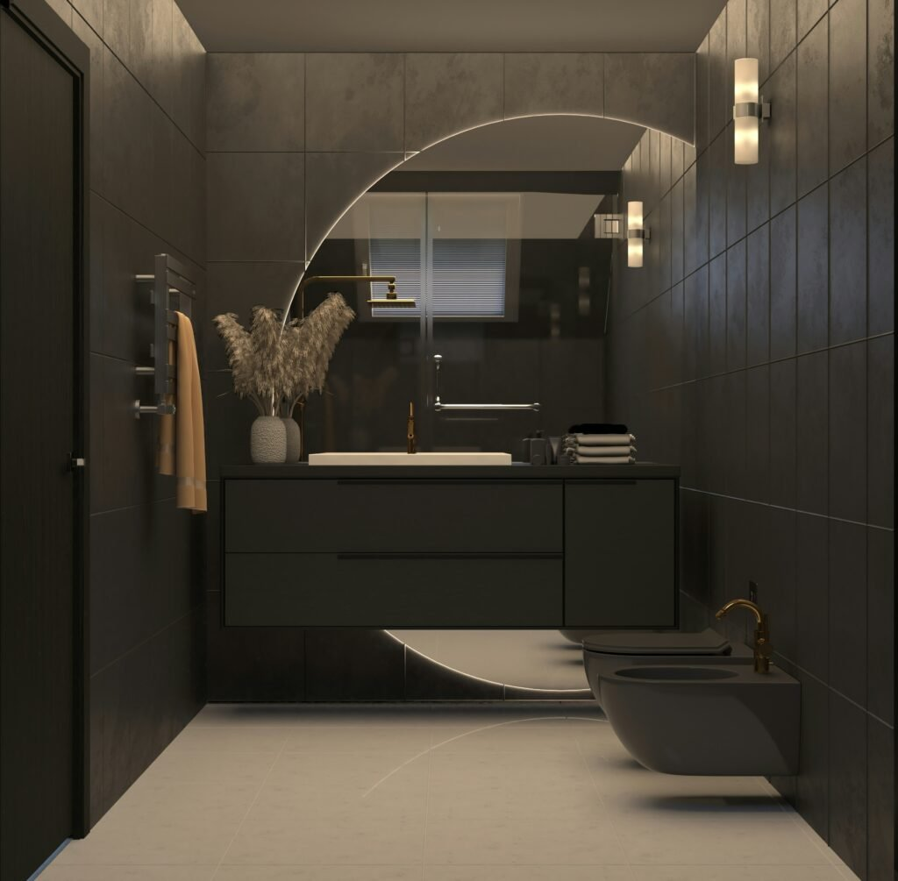
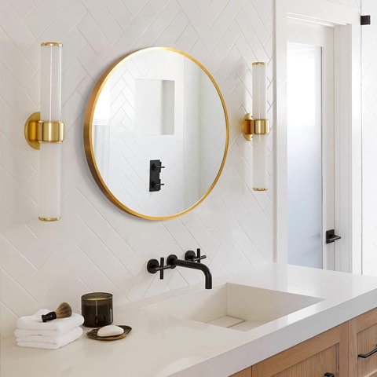
Gold Round Mirror 24 inch, Round Bathroom Mirror with Brushed Metal Frame Large Circle
Shop on Amazon13. Add Statement Wallpaper
A vinyl or moisture-resistant wallpaper specifically rated for bathrooms is essential here. A standard paper version will bubble and peel within a season.
This works best on a wall with limited direct water exposure, even with a bathroom-rated product.
Proper adhesive and surface prep matter more for this installation than almost any other idea on this list. Worth hiring a professional if the wallpaper itself is a real investment.
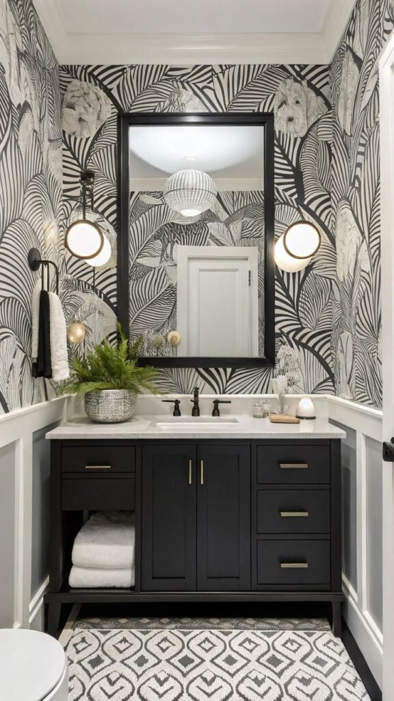
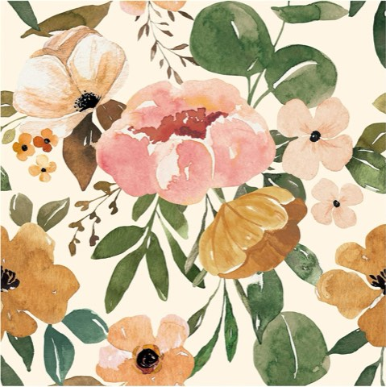
HAOKHOME Vintage Boho Floral Peel and Stick Wallpaper Peonies Removable Rose
Shop on Amazon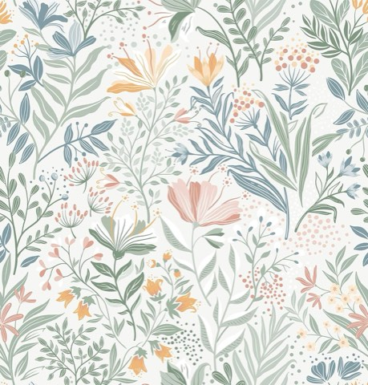
Fititem Floral Peel and Stick Wallpaper Boho Modern Wall Paper 17.3”×78.7”
Shop on Amazon14. Mount Floating Shelves
A shelf adds both storage and a spot to style smaller objects, solving two problems with one installation.
Proper wall anchors matter more here than in a drier room, since humidity can weaken standard drywall anchors over time.
Moisture-resistant materials, sealed wood, metal, acrylic, outlast an untreated wood shelf in this environment.

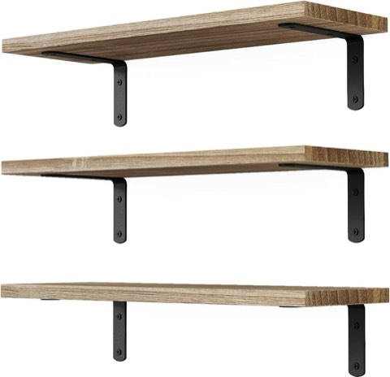
DOLLFIO Floating Wall Shelves, Decor & Storage, Rustic Brown, 16.5'', 3Pcs
Shop on Amazon15. Hang Framed Art Prints
A print in a sealed, moisture-resistant frame holds up far better than one in a standard wood frame with exposed edges.
Keeping framed art away from direct shower spray and steam extends its life considerably.
A drier wall, near the vanity or opposite the shower, is the safest placement for this idea. Worth checking the frame material specifically before assuming any print will survive long-term in this room.
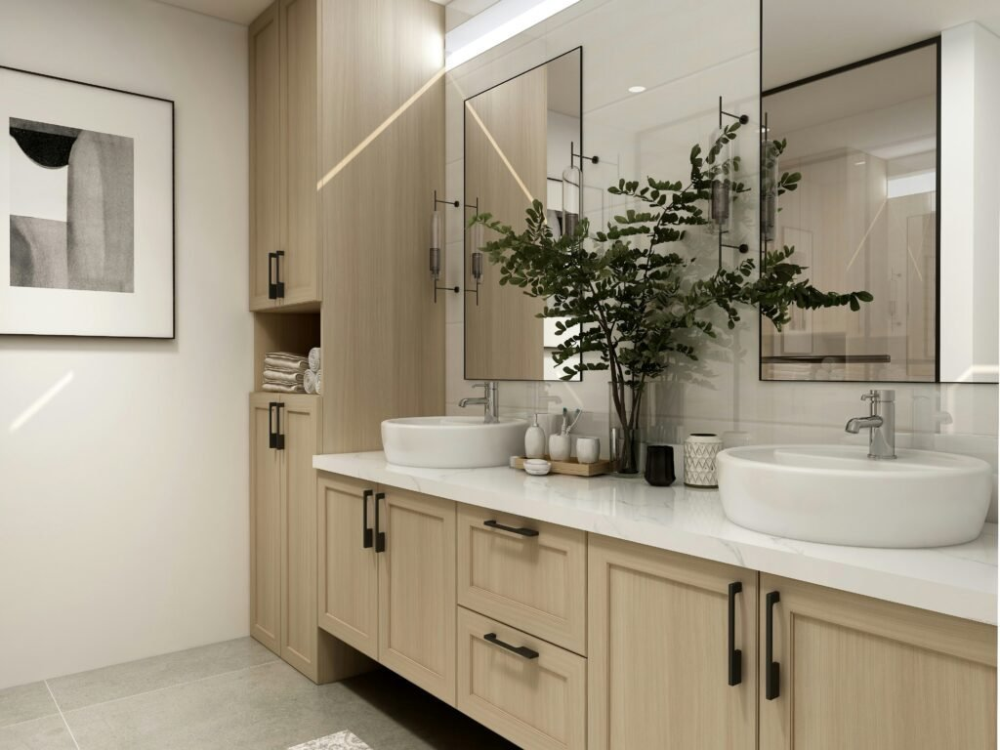
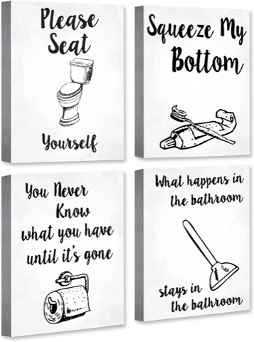
Framed Funny Bathroom Canvas Wall Art with Wooden Frames, Set of 4, 8x10
Shop on AmazonFunny Bathroom Signs Wall Decor Prints Framed Great Quotes and Sayings Canvas Wall Art
Shop on AmazonA Little Planning Saves a Redo Later
None of these 15 ideas need to happen all at once.
Start with whichever one solves the most obvious gap on your actual bathroom wall, and check the material and placement considerations before committing.
A little attention to moisture and mounting upfront saves a disappointing redo a year later.
Small wall changes genuinely do add up to a noticeably different room.